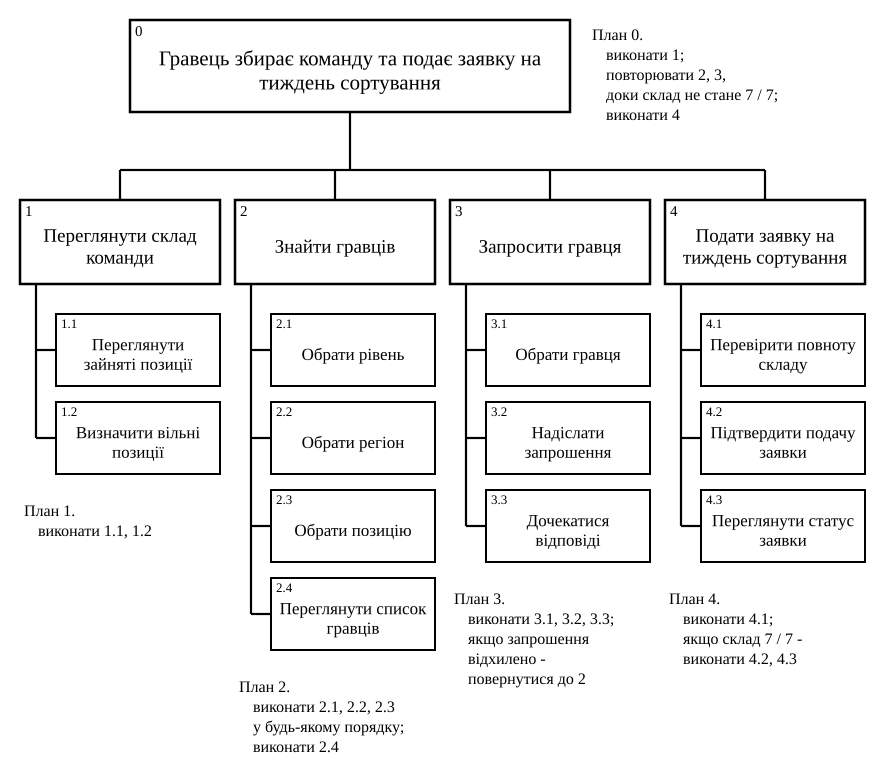
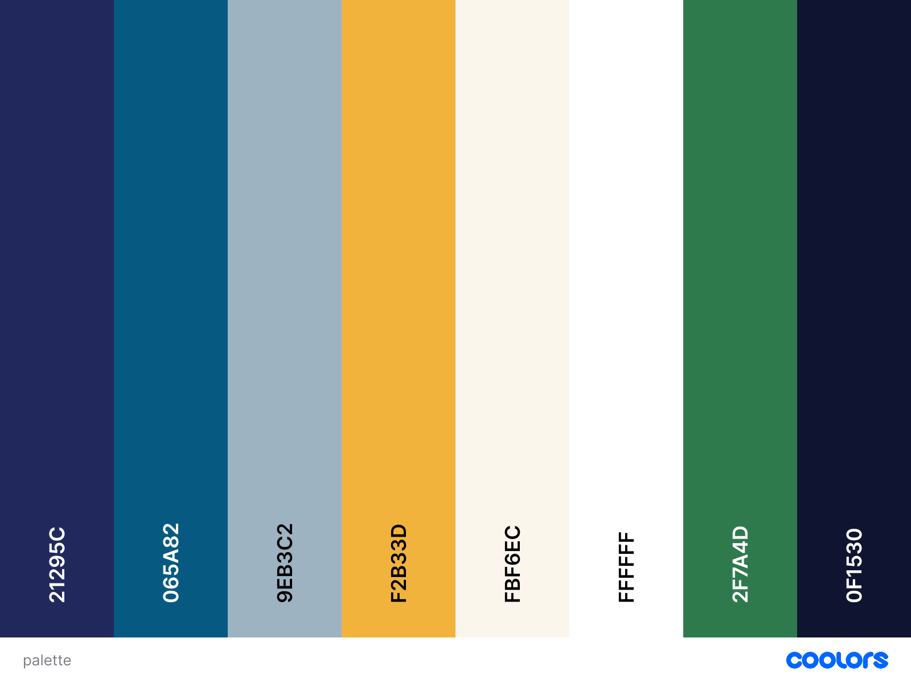
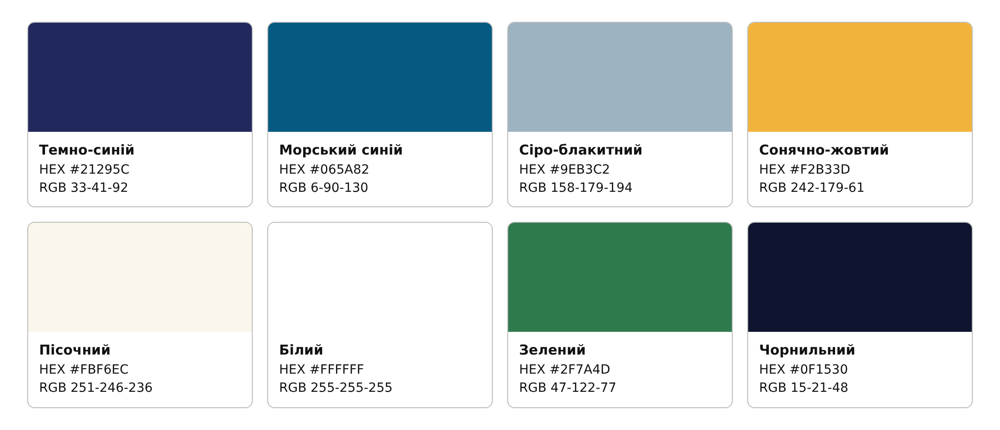
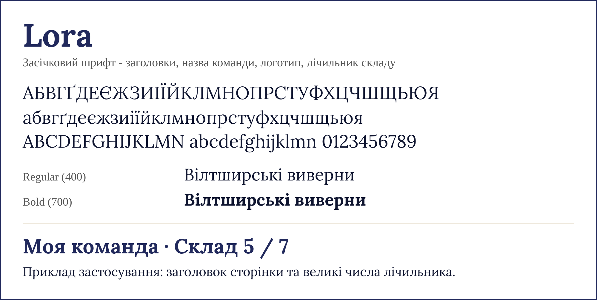
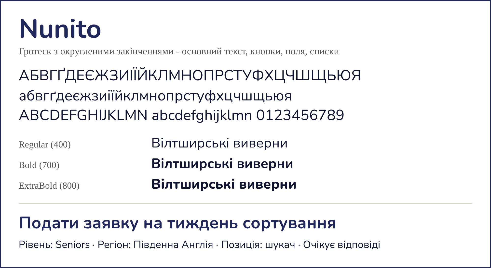

Документація
Прототип веб-сайту Літньої рекреаційної ліги з квідичу (SQRL). Користувач - гравець, контекст - збір команди перед початком сезону та подача заявки на тиждень сортування.
А) Ієрархічний аналіз завдань (HTA)
Прототип підтримує сценарій 1 з лабораторної роботи № 2: гравець Драко Малфой перед початком сезону збирає команду «Вілтширські виверни» та подає заявку на тиждень сортування. Діаграму HTA наведено на рис. 1. Біля кожного вузла вказано план виконання підзадач, а виноски під рисунком пояснюють, як відповідні дії реалізовано в прототипі.

Виноски до діаграми HTA
- 1 Переглянути склад команди. Склад відображено на темно-синій панелі у вигляді семи позицій; вільні позиції позначено словом «вільно», а лічильник показує «n / 7».
- 2 Знайти гравців. Рівень, регіон і позицію обирають із випадних списків; рівень і регіон заздалегідь узято з профілю капітана, тому зазвичай змінюють лише позицію. Список гравців оновлюється одразу.
- 3 Запросити гравця. Біля кожного знайденого гравця є кнопка «Запросити»; після надсилання її замінює статус «Очікує відповіді». У прототипі відповідь імітується через кілька секунд, і гравець, який прийняв запрошення, автоматично займає вільну позицію.
- 4 Подати заявку. Кнопка «Подати заявку на тиждень сортування» неактивна, доки склад не становить 7 / 7; вона відкриває сторінку заявки, де капітан перевіряє склад, підтверджує подачу та бачить статус заявки.
Б) Колірна схема
Тип колірної схеми - комплементарна: домінують холодні сині відтінки палітри Deep Sea, а теплий сонячно-жовтий виступає контрастним акцентом.
Сині кольори асоціюються з нічним небом і чарівним світом та створюють спокійне тло для роботи з формами й списками. Сонячно-жовтий - колір золотого снича й літа - використано лише для головних дій, тому погляд користувача одразу знаходить наступний крок. Світлий пісочний фон замість чисто білого зменшує втому очей під час тривалої роботи, а зелений колір зарезервовано для успішних статусів. Усі пари «текст - фон» мають контраст не менше 4,5 : 1. Палітру з восьми кольорів наведено на рис. 2.


Роль кожного кольору
- Темно-синій, RGB 33-41-92 (#21295C), висока насиченість: основний колір бренду - фон шапки сайту та панелі складу команди, на якому розміщено білий текст; також колір заголовків на світлому тлі.
- Морський синій, RGB 6-90-130 (#065A82), середня насиченість: другорядні дії - кнопки «Запросити» біля гравців, текстові посилання та рамка активного (у фокусі) поля фільтра.
- Сіро-блакитний, RGB 158-179-194 (#9EB3C2), низька насиченість: допоміжний колір - назви позицій і підписи на темно-синій панелі складу, а також фон неактивної кнопки подачі заявки, поки склад не становить 7 / 7.
- Сонячно-жовтий, RGB 242-179-61 (#F2B33D), висока насиченість: акцентний колір - фон кнопки головної дії «Подати заявку на тиждень сортування», слово «вільно» на вільних позиціях і підкреслення активного пункту меню; текст на ньому темно-синій.
- Пісочний, RGB 251-246-236 (#FBF6EC), низька насиченість: базовий колір фону сторінки, світліший і тепліший за білий, на якому розміщено картки.
- Білий, RGB 255-255-255 (#FFFFFF): базовий колір - фон карток із фільтрами та списком гравців, полів введення і колір тексту на темно-синіх елементах.
- Зелений, RGB 47-122-77 (#2F7A4D), середня насиченість: колір успішних статусів - «Прийняв запрошення», «Заявку подано» та заповненого складу «7 / 7».
- Чорнильний, RGB 15-21-48 (#0F1530), майже чорний: базовий колір основного тексту на світлому тлі; м’якший за чистий чорний, але зберігає високий контраст.
В) Схема ліній, меж і фону
Інтерфейс складається з окремих карток на пісочному тлі з однаковими проміжками 24 px: смислові блоки відокремлює білий простір, а не лінії. Лінії використано лише всередині карток - як тонкі горизонтальні розділювачі рядків у списках. Заокруглені кути без тіней роблять інтерфейс м’яким і легким, що відповідає рекреаційному характеру ліги. Контраст світлої та темної карток візуально розділяє дві частини завдання: пошук кандидатів і склад команди.
Конкретні елементи стратегії
- Білі картки з рамкою 1 px (RGB 222-211-188) і радіусом заокруглення 18 px групують фільтри пошуку та список кандидатів.
- Темно-синя заокруглена панель містить склад команди: сім слотів позицій, розділених лініями 1 px.
- Вільні позиції у складі команди позначено сонячно-жовтим словом «вільно», яке змінюється на ім’я гравця, щойно той приймає запрошення.
- Жовта смуга завтовшки 4 px під темно-синьою шапкою відокремлює навігацію від робочої області сторінки.
Г) Схема шрифтів
На сайті використано два шрифти з Google Fonts: засічковий для заголовків і гротеск для решти тексту. Обидва підтримують українську абетку. Зразки шрифтів наведено на рис. 3 і рис. 4.
- Lora (засічковий, накреслення 400 і 700) - заголовки сторінок, назва команди, логотип SQRL і великі числа лічильника складу. Книжковий засічковий шрифт нагадує видання про чарівний світ і виразний у великих кеглях.

- Nunito (гротеск з округленими закінченнями, накреслення 400, 700, 800) - основний текст, підписи полів, кнопки, списки та статуси. Добре читається на екрані навіть дрібним кеглем, а округлі форми додають інтерфейсу дружнього характеру.

- Як резервні шрифти вказано Georgia (serif) для заголовків та Arial (sans-serif) для тексту на випадок, якщо веб-шрифти не завантажаться.
Д) Припущення та обмеження
Якість дизайну варто оцінювати за тим, наскільки швидко і без помилок капітан доводить склад до 7 / 7 та подає заявку.
На чому зосереджено дизайн
- Склад і пошук гравців - на одній сторінці: лічильник «n / 7» завжди видно, тож не треба перемикатися між екранами.
- Мінімум дій: рівень і регіон уже підставлено з профілю капітана.
- Запобігання помилкам: кнопка подачі неактивна, доки склад не становить 7 / 7.
- Зворотний зв’язок на кожну дію: статуси запрошень і заявки.
- Обробка відмови: один гравець відхиляє запрошення (план 3).
Що залишено поза увагою в інтересах часу
- Скасування запрошення та вилучення гравця зі складу.
- Профіль і порівняння кандидатів - вибір за даними в рядку списку.
Припущення про користувача та його цілі
- Мета капітана - швидко укомплектувати команду за один сеанс.
- Рівень і регіон команди відомі, тож головний фільтр - позиція.
- Гравці відповідають швидко; у прототипі - за кілька секунд.
Пріоритет віддано основному шляху сценарію: усе, що не впливає на доведення складу до 7 / 7, перенесено на наступні ітерації, щоб за обмежений час ретельно відпрацювати саме цей шлях.
Е) Використані ресурси
Ресурси, використані під час створення прототипу, наведено в таблиці 1. Фреймворки та бібліотеки (Bootstrap, jQuery тощо) не використовуються.
Таблиця 1 - Використані ресурси
| № | Ресурс | Посилання | Ліцензія / умови | Використання |
|---|---|---|---|---|
| 1 | Google Fonts - Lora | fonts.google.com/specimen/Lora | SIL Open Font License 1.1 | Шрифт заголовків, назви команди, логотипа та лічильника складу |
| 2 | Google Fonts - Nunito | fonts.google.com/specimen/Nunito | SIL Open Font License 1.1 | Шрифт основного тексту, кнопок, полів і списків |
| 3 | Coolors - палітра «Deep Sea» | coolors.co | Безкоштовний онлайн-сервіс | Основа колірної схеми (п’ять синіх відтінків), доповнена власними кольорами: сонячно-жовтим, зеленим і пісочним |
| 4 | SVG-ілюстрація снича | - | Лабораторна робота № 2 | Логотип SQRL; створено вручну у Figma |
| 5 | Каркасні прототипи сайту | - | Лабораторна робота № 2 | Основа компонування сторінки «Моя команда» та шапки сайту |
| 6 | MDN Web Docs | developer.mozilla.org | CC BY-SA 2.5 | Довідник з HTML5, CSS і JavaScript під час розробки |
Файли прототипу
| Файл | Призначення |
|---|---|
index.html | Головна сторінка гравця - точка входу в завдання: наступний крок, стан складу, сповіщення |
team/index.html | «Моя команда»: склад (підзадача 1), пошук гравців (2) і запрошення (3) |
application/index.html | Заявка на тиждень сортування: перевірка складу, підтвердження та статус (4) |
docs/index.html | Ця сторінка документації |
css/variables.css | Змінні кольорів, шрифтів і розмірів |
css/base.css | Спільні стилі: шапка, підвал, картки, кнопки та їхні стани, підказки |
css/home.css, team.css, application.css, docs.css | Стилі окремих сторінок |
js/data.js | Жорстко закодовані дані: капітан, команда, гравці |
js/store.js | Стан прототипу та імітація відповідей на запрошення і розгляду заявки |
js/common.js | Сповіщення, підказки для нереалізованих функцій, скидання демо-даних |
js/home.js, team.js, application.js | Поведінка окремих сторінок |
assets/logo.svg | Емблема SQRL (снич) |